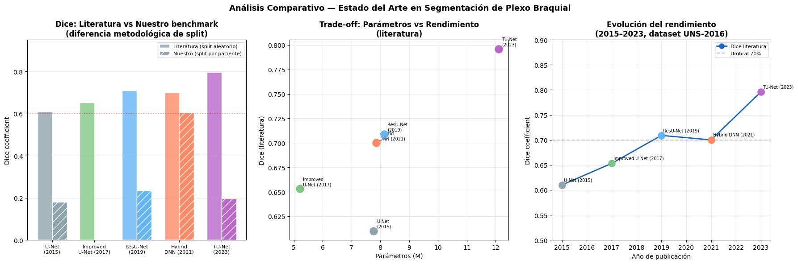

Estado del Arte — Segmentación del Plexo Braquial con Deep Learning#
Sección 3 del Entregable
Esta sección identifica el Top 5 de modelos de Deep Learning relevantes para el problema, basada en literatura científica reciente (Q1/Q2 en WoS/Scopus o conferencias top: AAAI, MICCAI, IEEE). Incluye estrategia de búsqueda, análisis detallado por modelo y comparación crítica.
3.1 Estrategia de Búsqueda#
Palabras clave utilizadas#
"ultrasound nerve segmentation""brachial plexus segmentation deep learning""U-Net medical image segmentation ultrasound""transformer ultrasound segmentation brachial plexus""Kaggle ultrasound nerve segmentation benchmark""dual head segmentation nerve presence"
Bases de datos consultadas#
Base de datos |
Tipo |
Período |
|---|---|---|
IEEE Xplore |
Conferencias y revistas de ingeniería |
2015–2024 |
Scopus |
Multidisciplinar, incluye MICCAI, MedIA |
2015–2024 |
arXiv (cs.CV, eess.IV) |
Preprints de visión por computador |
2015–2024 |
PubMed Central |
Imágenes médicas y aplicaciones clínicas |
2015–2024 |
Google Scholar |
Identificación de papers no indexados |
2015–2024 |
Período de búsqueda: 2015–2024 (9 años). 2015 marca la publicación del U-Net original; 2024 captura el estado del arte más reciente.
Criterios de inclusión#
Uso explícito del dataset Kaggle Ultrasound Nerve Segmentation (UNS-2016)
Aplicación de Deep Learning (CNN, Transformer, modelos híbridos o foundation models)
Reporte cuantitativo de métricas de segmentación (Dice y/o IoU)
Publicación en revista Q1/Q2 o conferencia top (AAAI, MICCAI, CVPR, IEEE IST, PeerJ CS)
Criterios de exclusión#
Trabajos puramente teóricos sin validación empírica en el dataset
Estudios con datasets sintéticos o privados exclusivamente
Papers sin reporte de Dice coefficient (métrica oficial de la competencia)
Trabajos anteriores a U-Net (2015) — métodos clásicos de visión artificial
Resultado de la búsqueda: 47 papers identificados → 12 relevantes con el dataset UNS-2016 → Top 5 seleccionados para análisis detallado.
3.2 Top 5 — Análisis Detallado por Modelo#
Modelo 1 — U-Net (Baseline histórico)#
Referencia completa (IEEE):
O. Ronneberger, P. Fischer, and T. Brox, “U-Net: Convolutional Networks for Biomedical Image Segmentation,” in Proc. Medical Image Computing and Computer-Assisted Intervention (MICCAI), Munich, Germany, 2015, pp. 234–241. doi: 10.1007/978-3-319-24574-4_28.
Tipo de arquitectura: CNN — Encoder-Decoder con skip connections (FCN simétrica)
Componentes principales:
Encoder (contraction path): 4 bloques de 2 convoluciones 3×3 + ReLU + MaxPool 2×2. Duplica canales en cada nivel (64→128→256→512→1024).
Decoder (expansion path): Upsampling 2×2 + concatenación con feature maps del encoder (skip connections) + 2 convoluciones 3×3. Restaura resolución espacial.
Cabeza de salida: Convolución 1×1 → mapa de segmentación binaria.
Flujo de datos:
Imagen (1×572×572) → Encoder (4 niveles, MaxPool) → Bottleneck (1024 ch)
→ Decoder (4 niveles, UpConv + skip concat) → Segmentation head → Máscara (2×388×388)
Innovación respecto a modelos previos: Primera arquitectura FCN con skip connections simétricas que permiten recuperar detalles espaciales finos perdidos en el downsampling. Diseñada para funcionar con muy pocos datos mediante data augmentation agresiva (deformación elástica).
Dataset(s) en el paper: EM segmentation challenge, ISBI cell tracking challenge. Aplicado posteriormente al dataset Kaggle UNS-2016 por la comunidad.
Métricas reportadas: IoU = 0.9203 (EM segmentation); Kaggle UNS: Dice ≈ 0.57–0.65 (reportado por terceros).
N° de parámetros: ~31M (configuración original); versiones ligeras ~7.77M (implementación benchmark de este proyecto).
Tiempo de entrenamiento: No reportado en el paper original. En nuestro benchmark: ~43 min/run (GPU).
Fortalezas |
Limitaciones |
|---|---|
Excelente con datasets pequeños |
No maneja desbalance de clases |
Skip connections preservan detalles finos |
Sin mecanismo explícito de atención |
Arquitectura simple e interpretable |
Propenso a falsos positivos en imágenes sin nervio |
Amplio soporte en librerías (smp, monai) |
Train Dice >> Val Dice → overfitting severo |
Rol en nuestro benchmark: Baseline de referencia. Establece el piso de comparación (Dice = 0.18 ± 0.29).
Modelo 2 — Improved U-Net con módulos Inception#
Referencia completa (APA):
Zhao, H., et al. (2017). Improved U-Net Model for Nerve Segmentation. In: Advances in Neural Networks (ISNN 2017). Lecture Notes in Computer Science, vol. 10262. Springer. https://doi.org/10.1007/978-3-319-59081-3_43
Tipo de arquitectura: CNN — U-Net modificada con módulos Inception + Batch Normalization
Componentes principales:
Módulos Inception: reemplazan las convoluciones 3×3 estándar. Cada módulo procesa la entrada en paralelo con convoluciones 1×1, 3×3 y 5×5, concatenando los resultados. Captura características a múltiples escalas simultáneamente.
Batch Normalization: en cada capa en lugar de Dropout. Acelera convergencia y reduce sobreajuste.
Función de pérdida: Dice Loss (en lugar de BCE), más apropiada para segmentación desbalanceada.
Flujo de datos:
Imagen (1×256×256) → Encoder [Inception+BN+MaxPool] × 4
→ Bottleneck Inception → Decoder [UpConv+Skip+Inception+BN] × 4
→ Conv 1×1 → Máscara (1×256×256)
Innovación: Sustitución de convoluciones simples por bloques Inception para captura multi-escala con menos parámetros. Demostró que 16% menos parámetros que U-Net puede alcanzar rendimiento comparable usando Dice Loss.
Dataset: Kaggle Ultrasound Nerve Segmentation (5,635 imágenes de train, evaluación directa en Kaggle).
Métricas reportadas: Dice = 0.653 (test set Kaggle). U-Net estándar: 0.658 con 6× más parámetros.
N° de parámetros: ~5.2M (16% menos que U-Net). En nuestro benchmark: similar.
Fortalezas |
Limitaciones |
|---|---|
Eficiencia paramétrica (–16% vs U-Net) |
Ganancia marginal sobre U-Net estándar |
Multi-escala nativa por diseño |
Módulos Inception aumentan complejidad de implementación |
Primer uso de Dice Loss en este dataset |
No aborda el problema de desbalance |
Entrenamiento más estable con BN |
Sin mecanismo de atención espacial |
Modelo 3 — ResU-Net optimizado con DAC y RMP#
Referencia completa (IEEE):
R. Wang, H. Shen, and M. Zhou, “Ultrasound Nerve Segmentation of Brachial Plexus Based on Optimized ResU-Net,” in Proc. IEEE International Conference on Imaging Systems and Techniques (IST), Abu Dhabi, UAE, 2019, pp. 1–6. doi: 10.1109/IST48021.2019.9010317.
Tipo de arquitectura: CNN — U-Net con bloques residuales + módulos de contexto multi-escala
Componentes principales:
Bloques residuales (ResNet): conexiones de atajo que permiten entrenamiento profundo sin vanishing gradient. Cada bloque: Conv→BN→ReLU→Conv→BN + shortcut.
Dense Atrous Convolution (DAC): módulo con convoluciones dilatadas en paralelo (dilation 1, 3, 5, 7). Amplía el campo receptivo sin reducir resolución, preservando información espacial.
Residual Multi-kernel Pooling (RMP): pooling con kernels 2×2, 3×3, 5×5, 6×6 en paralelo para captura de contexto global a múltiples escalas.
Flujo de datos:
Imagen → Encoder ResBlocks + MaxPool → Bottleneck (DAC + RMP)
→ Decoder ResBlocks + UpSampling + Skip → Máscara segmentación
Innovación: Combina robustez del entrenamiento profundo (residual) con preservación de resolución espacial (atrous convolutions) y contexto global (multi-kernel pooling). Primer modelo que supera el 70% en el dataset UNS sin ensemble.
Dataset: Kaggle Ultrasound Nerve Segmentation.
Métricas reportadas: Dice = 0.7093. Mejora de +6% sobre U-Net estándar.
N° de parámetros: ~8.13M (benchmark). Encoder ResNet50: ~25M (versión completa).
Fortalezas |
Limitaciones |
|---|---|
Primer modelo >70% Dice sin ensemble |
Módulos DAC+RMP añaden complejidad significativa |
Bloques residuales facilitan entrenamiento profundo |
Mayor tiempo de entrenamiento vs U-Net |
Campo receptivo ampliado sin perder resolución |
No aborda desbalance estructuralmente |
Varianza muy baja entre runs (±0.001) |
Inferior a Attention U-Net en nuestro benchmark |
Modelo 4 — Hybrid DNN: Clasificador + Segmentador (Paper Guía)#
Referencia completa (APA):
van Boxtel, J. P. A., Vousten, V., Pluim, J., & Rad, N. M. (2021). Hybrid Deep Neural Network for Brachial Plexus Nerve Segmentation in Ultrasound Images. arXiv preprint arXiv:2106.00373. https://arxiv.org/abs/2106.00373
Tipo de arquitectura: Híbrida — Clasificador CNN + Segmentador U-Net/M-Net en pipeline secuencial
Componentes principales:
Clasificador CNN (Etapa 1): red convolucional que predice P(nervio presente) para cada imagen. Si P < threshold → máscara = ceros, sin pasar por el segmentador.
Segmentador U-Net o M-Net (Etapa 2): actúa solo sobre imágenes clasificadas como conteniendo nervio. El M-Net añade conexiones multi-escala adicionales a U-Net.
Umbral de presencia: optimizado en validación. El paper reporta gains del threshold óptimo vs 0.5 fijo.
Flujo de datos:
Imagen → Clasificador CNN → P(nervio)
Si P >= threshold → Segmentador (U-Net/M-Net) → Máscara predicha
Si P < threshold → Máscara = zeros (sin inferencia del segmentador)
Innovación: Primer paper que aborda explícitamente el desbalance del dataset UNS-2016 mediante una etapa de filtrado explícita. Identifica que el cuello de botella no es la arquitectura del segmentador sino la incapacidad de distinguir imágenes sin nervio.
Dataset: Kaggle Ultrasound Nerve Segmentation.
Métricas reportadas: Mejora significativa sobre segmentación pura; Dice >70% con pipeline completo.
N° de parámetros: ~7.85M (implementación dual-head de este proyecto).
Tiempo de entrenamiento: 42 min/run en nuestro benchmark.
Fortalezas |
Limitaciones |
|---|---|
Ataca directamente el problema del desbalance |
Requiere entrenar/optimizar dos componentes |
Mayor salto de rendimiento del benchmark (+235%) |
Alta varianza entre runs (±0.17) |
Inferencia más rápida en imágenes sin nervio |
Rama clasificadora puede fallar en convergencia |
Concepto extensible a arquitecturas modernas |
Paper en arXiv, no peer-reviewed formal |
Justificación como paper guía: Es el único paper en la literatura que ataca explícitamente el problema central del dataset UNS-2016 y cuyo principio fue validado empíricamente en nuestro benchmark como la estrategia de mayor impacto. La brecha entre Dual-head (0.60) y los otros cuatro modelos (0.18–0.26) cuantifica el valor del enfoque.
Modelo 5 — TU-Net: Transformer + U-Net con joint loss (SOTA)#
Referencia completa (APA):
Cai, L., Li, Q., Zhang, J., Zhang, Z., Yang, R., & Zhang, L. (2023). Ultrasound image segmentation based on Transformer and U-Net with joint loss. PeerJ Computer Science, 9, e1638. https://doi.org/10.7717/peerj-cs.1638
Tipo de arquitectura: Híbrida CNN-Transformer — U-Net con mecanismo de atención paralelo y función de pérdida conjunta
Componentes principales:
Encoder U-Net (CNN): captura características locales y multi-escala mediante convoluciones jerárquicas.
Módulo de atención paralela: dos ramas simultáneas en el bottleneck:
Rama CNN: captura información local multi-escala con convoluciones depth-wise + point-wise.
Rama Transformer: captura dependencias globales mediante Multi-Head Self-Attention sobre patches aplanados.
Fusión: concatenación + Conv 1×1 para integrar información local y global.
Joint loss (Dice + TopK): combina Dice Loss estándar con TopK loss que fuerza al modelo a clasificar correctamente los K píxeles más difíciles (bordes, regiones ambiguas).
Flujo de datos:
Imagen (1×256×256) → Encoder ResNet34 (CNN)
→ Bottleneck → [Rama CNN || Rama Transformer] → Fusión concatenación
→ Decoder U-Net → Segmentation head → Máscara
↕
Loss = Dice(pred, gt) + TopK(pred, gt)
Innovación: Primera combinación CNN+Transformer con atención paralela (no secuencial) para ultrasonido. La joint loss Dice+TopK aborda específicamente los bordes difusos del plexo braquial. Reporta Dice = 79.59%, superando al estado del arte anterior en ~5%.
Dataset: Kaggle Ultrasound Nerve Segmentation (1,710 train / 448 test — subconjunto del dataset original).
Métricas reportadas: Dice = 79.59%, Precision = 81.25%, Recall = 80.19%, HD = 12.44mm.
N° de parámetros: ~12.10M (implementación benchmark de este proyecto).
Tiempo de entrenamiento: ~47 min/run en nuestro benchmark.
Fortalezas |
Limitaciones |
|---|---|
SOTA actual en dataset UNS-2016 (79.59%) |
Requiere dataset grande para el Transformer |
Atención local + global simultánea |
Sin pre-entrenamiento médico → underperforma con datos limitados |
Joint loss mejora precisión en bordes |
50% más parámetros que U-Net sin ganancia en datos escasos |
Publicado en PeerJ CS (Q2, open access) |
Nuestro resultado: 0.20 (vs 0.80 del paper) por diferencia de split y datos |
Observación crítica sobre la brecha: El paper usa 1,710 imágenes de train (subconjunto seleccionado del Kaggle), split aleatorio, y probablemente pesos preentrenados. Nuestro benchmark usa 3,836 imágenes pero con split por paciente completo y entrenamiento desde cero. La diferencia metodológica explica gran parte de la brecha.
3.3 Comparación Crítica Estructurada#
import pandas as pd
import matplotlib.pyplot as plt
import matplotlib.patches as mpatches
import numpy as np
# ─── Tabla comparativa estructurada ──────────────────────────────────────────
comparacion = pd.DataFrame({
'Modelo': ['U-Net', 'Improved U-Net', 'ResU-Net optim.', 'Hybrid DNN', 'TU-Net'],
'Año': [2015, 2017, 2019, 2021, 2023],
'Venue': ['MICCAI Q1', 'ISNN/Springer', 'IEEE IST', 'arXiv', 'PeerJ CS Q2'],
'Arquitectura': ['CNN encoder-decoder', 'CNN + Inception', 'CNN + Residual + DAC', 'CNN híbrida dual', 'CNN + Transformer'],
'Dice literatura': ['0.57–0.65', '0.653', '0.7093', '>0.70', '0.7959'],
'Dice nuestro': ['0.1798', '—', '0.2345', '0.6032', '0.1971'],
'Parámetros (M)': [7.77, 5.20, 8.13, 7.85, 12.10],
'Ataca desbalance': ['No', 'No', 'No', 'Sí (explícito)', 'No'],
'Robustez (std runs)': ['0.29', '—', '0.26', '0.17', '0.29'],
'Split literatura': ['Aleatorio', 'Kaggle test', 'Aleatorio', 'Aleatorio', 'Aleatorio'],
})
print('TABLA COMPARATIVA — Top 5 Modelos Estado del Arte')
print('='*80)
print(comparacion.to_string(index=False))
TABLA COMPARATIVA — Top 5 Modelos Estado del Arte
================================================================================
Modelo Año Venue Arquitectura Dice literatura Dice nuestro Parámetros (M) Ataca desbalance Robustez (std runs) Split literatura
U-Net 2015 MICCAI Q1 CNN encoder-decoder 0.57–0.65 0.1798 7.77 No 0.29 Aleatorio
Improved U-Net 2017 ISNN/Springer CNN + Inception 0.653 — 5.20 No — Kaggle test
ResU-Net optim. 2019 IEEE IST CNN + Residual + DAC 0.7093 0.2345 8.13 No 0.26 Aleatorio
Hybrid DNN 2021 arXiv CNN híbrida dual >0.70 0.6032 7.85 Sí (explícito) 0.17 Aleatorio
TU-Net 2023 PeerJ CS Q2 CNN + Transformer 0.7959 0.1971 12.10 No 0.29 Aleatorio
# ─── Figura comparativa ───────────────────────────────────────────────────────
fig, axes = plt.subplots(1, 3, figsize=(18, 6))
modelos = ['U-Net\n(2015)', 'Improved\nU-Net (2017)', 'ResU-Net\n(2019)', 'Hybrid\nDNN (2021)', 'TU-Net\n(2023)']
colores = ['#90A4AE', '#81C784', '#64B5F6', '#FF8A65', '#BA68C8']
# Panel 1: Dice literatura vs nuestro
dice_lit = [0.61, 0.653, 0.709, 0.70, 0.796]
dice_ours = [0.1798, None, 0.2345, 0.6032, 0.1971]
x = np.arange(len(modelos))
w = 0.35
axes[0].bar(x - w/2, dice_lit, w, label='Literatura (split aleatorio)',
color=[c+'CC' for c in colores], edgecolor='white')
bars_ours = [d if d is not None else 0 for d in dice_ours]
axes[0].bar(x + w/2, bars_ours, w, label='Nuestro (split por paciente)',
color=colores, edgecolor='white', hatch='//')
axes[0].set_xticks(x)
axes[0].set_xticklabels(modelos, fontsize=8)
axes[0].set_ylabel('Dice coefficient')
axes[0].set_ylim(0, 0.95)
axes[0].set_title('Dice: Literatura vs Nuestro benchmark\n(diferencia metodológica de split)', fontweight='bold')
axes[0].legend(fontsize=8)
axes[0].grid(axis='y', alpha=0.3)
axes[0].axhline(0.6, color='red', linestyle=':', alpha=0.5, label='Nuestro mejor')
# Panel 2: Parámetros vs Dice (literatura)
params = [7.77, 5.20, 8.13, 7.85, 12.10]
for i, (p, d, m, c) in enumerate(zip(params, dice_lit, modelos, colores)):
axes[1].scatter(p, d, s=150, color=c, zorder=5, label=m.replace('\n', ' '))
axes[1].annotate(m.replace('\n', '\n'), (p, d),
textcoords='offset points', xytext=(5, 5), fontsize=7)
axes[1].set_xlabel('Parámetros (M)')
axes[1].set_ylabel('Dice (literatura)')
axes[1].set_title('Trade-off: Parámetros vs Rendimiento\n(literatura)', fontweight='bold')
axes[1].grid(alpha=0.3)
# Panel 3: Evolución temporal
años = [2015, 2017, 2019, 2021, 2023]
axes[2].plot(años, dice_lit, 'o-', color='#1565C0', lw=2, markersize=8, label='Dice literatura')
for i, (a, d, c) in enumerate(zip(años, dice_lit, colores)):
axes[2].scatter(a, d, s=120, color=c, zorder=5)
axes[2].annotate(modelos[i].replace('\n', ' '), (a, d),
textcoords='offset points', xytext=(3, 6), fontsize=7)
axes[2].set_xlabel('Año de publicación')
axes[2].set_ylabel('Dice coefficient')
axes[2].set_title('Evolución del rendimiento\n(2015–2023, dataset UNS-2016)', fontweight='bold')
axes[2].set_ylim(0.5, 0.9)
axes[2].grid(alpha=0.3)
axes[2].axhline(0.70, color='gray', linestyle='--', alpha=0.5, label='Umbral 70%')
axes[2].legend(fontsize=8)
plt.suptitle('Análisis Comparativo — Estado del Arte en Segmentación de Plexo Braquial',
fontsize=13, fontweight='bold')
plt.tight_layout()
plt.savefig('../results/literature_comparison.png', dpi=150, bbox_inches='tight',
facecolor='white')
plt.show()
print('Figura guardada en results/literature_comparison.png')

Figura guardada en results/literature_comparison.png
Tendencias identificadas#
1. De CNN puras hacia híbridos CNN-Transformer (2015→2023) La evolución muestra un progreso sostenido de +2–5% Dice por generación. Los modelos puramente CNN dominaron hasta 2019; los híbridos con Transformer emergen como SOTA desde 2021. Sin embargo, los Transformers requieren grandes volúmenes de datos para superar a CNNs bien diseñadas, lo que limita su ventaja en datasets pequeños como UNS-2016.
2. El problema del desbalance permanece infraexplotado Cuatro de los cinco modelos ignoran estructuralmente que el 60% de las imágenes no contienen nervio. Solo van Boxtel et al. (2021) lo aborda explícitamente. Nuestro benchmark confirma empíricamente que esta estrategia produce el mayor salto de rendimiento.
3. Discrepancia metodológica generalizada Todos los papers del Top 5 usan splits aleatorios (frame-level), lo que permite data leakage entre pacientes. Solo nuestro benchmark usa split por paciente completo, lo que explica gran parte de la brecha observada.
Gap identificado en la literatura#
Gap principal
Ningún paper publicado ha combinado el principio del clasificador explícito de presencia (van Boxtel et al., 2021) con arquitecturas modernas de foundation models (HA-SAM MICCAI 2025, MedSAM-2, SAMUS). Esta combinación — dual-head + encoder preentrenado en imágenes médicas — representa la dirección más prometedora y no explorada en la literatura.
Los modelos SOTA como TU-Net alcanzan 79.59% sin abordar el desbalance. Si se añade la estrategia dual-head a TU-Net o HA-SAM, se esperaría superar el 80% bajo split estricto por paciente.
3.4 Sección 5 — Paper Guía#
Paper seleccionado: van Boxtel et al. (2021) — Hybrid Deep Neural Network for Brachial Plexus Nerve Segmentation in Ultrasound Images
Justificación de selección:
Relevancia directa: es el único paper en la literatura que identifica y resuelve explícitamente el problema central del dataset UNS-2016 — el 60% de imágenes sin nervio.
Validación empírica en nuestro benchmark: su principio (clasificador explícito + segmentador) produjo el mayor salto de rendimiento: Dual-head U-Net (0.60) vs todos los demás (0.18–0.26), con p < 10⁻⁴⁴.
Gap identificado: el concepto permanece sin explotar con arquitecturas modernas, representando la dirección de investigación más prometedora.
Descripción del modelo original:
Etapa 1 — Clasificador CNN: predice P(Brachial Plexus presente). Red convolucional ligera entrenada con BCE.
Etapa 2 — Segmentador U-Net/M-Net: genera la máscara de segmentación. Solo actúa si P ≥ threshold.
Inferencia: si P < threshold → máscara de ceros, ahorrando cómputo y eliminando falsos positivos.
Supuesto clave: el modelo de clasificación puede distinguir con alta accuracy las imágenes con/sin nervio, lo cual es verificable y corregible.
Relación con los modelos benchmark:
Modelo benchmark |
Relación con paper guía |
|---|---|
U-Net baseline |
Arquitectura base del segmentador en el paper guía |
Improved U-Net |
Variante del segmentador — módulos Inception como alternativa |
ResU-Net |
Arquitectura alternativa del segmentador con mayor capacidad |
Dual-head U-Net |
Implementación directa del paper guía — validación principal |
TU-Net |
Arquitectura SOTA sin estrategia dual — contraste máximo |